Caso 1.1 · Utilizar ACL
01 · Permisos iniciales
umask
ls -ld datos archivo
getfacl datos archivoCon umask 0002, datos queda en 775 y archivo en 664. Las entradas básicas corresponden al propietario, al grupo propietario y al resto.
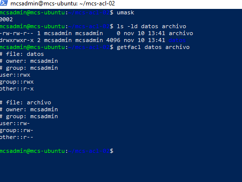
02 · Permiso para un usuario
setfacl -m u:prueba:rw- datos/archivo1
getfacl datos/archivo1La entrada de prueba concede lectura y escritura. La máscara rw- permite ambos permisos.
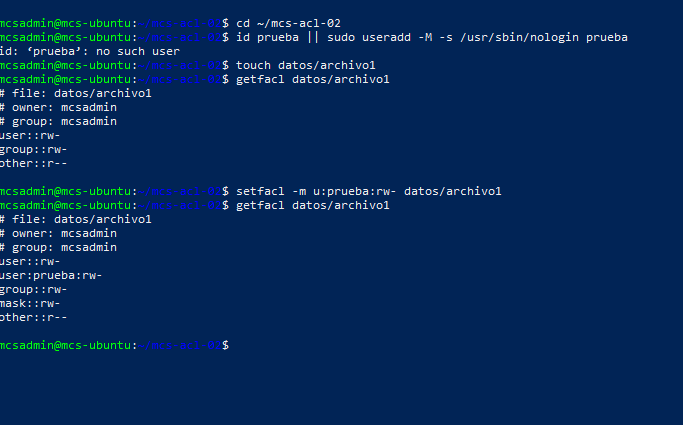
03 · ACL por defecto
setfacl -d -m u:prueba:rw- datos/archivos
touch datos/archivos/heredado.txt
getfacl datos/archivos datos/archivos/heredado.txtLa entrada default:user:prueba:rw- del directorio aparece como user:prueba:rw- en el archivo nuevo. La máscara del archivo es rw- y limita el grupo propietario a lectura y escritura.
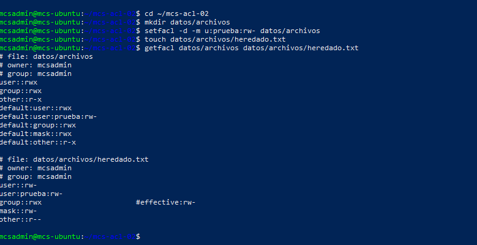
04 · Máscara de acceso
setfacl -m m::r-- datos/archivo1
getfacl datos/archivo1Las entradas de prueba y del grupo propietario siguen indicando rw-, pero sus permisos efectivos quedan en r--.
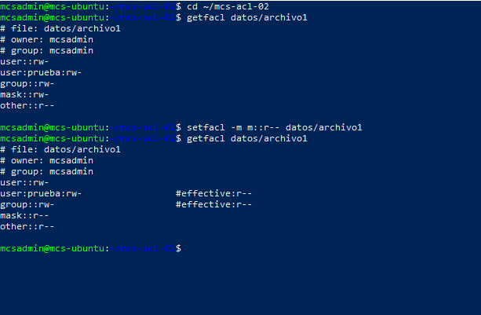
05 · ACL por defecto recursiva
setfacl -R -d -m group:grupo1:rwx dir
getfacl -d dir dir/subdirLa regla por defecto de grupo1 aparece en ambos directorios. getfacl -d muestra solo las entradas por defecto y omite el prefijo default:.
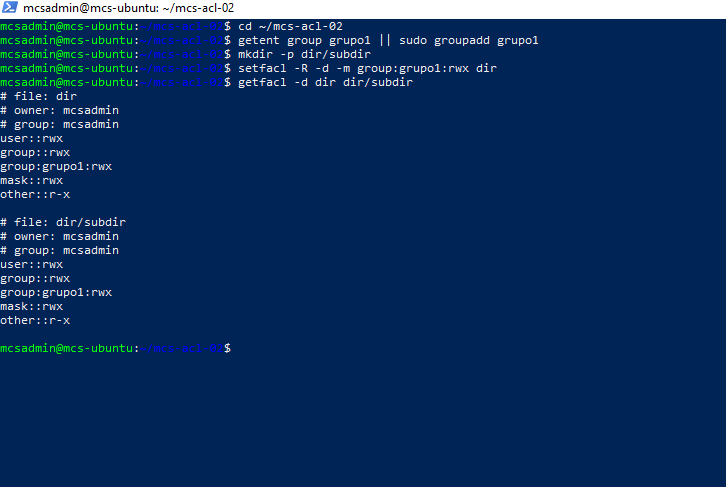
06 · Acceso de los grupos
setfacl -m group:grupo2:r-x dir/subdir
setfacl -m group::r-x dir/subdir
getfacl dir/subdirgrupo2 y el grupo propietario tienen r-x en la ACL de acceso. La regla por defecto de grupo1 se conserva.
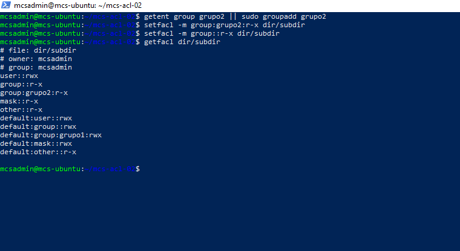
07 · Copia entre archivos
getfacl fich1 | setfacl --set-file=- fich2
getfacl fich1 fich2fich2 recibe las entradas ACL de fich1. Ambos muestran user:prueba:r-- y mask::rw-.
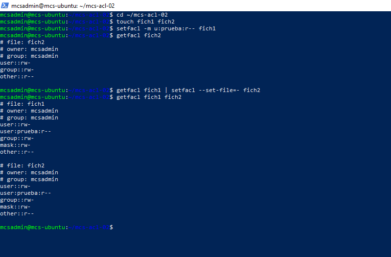
Caso 1.2 · Aplicar ACL a un proyecto
08 · Grupos de miproyecto
chmod 770 miproyecto miproyecto/fichero{1,2,3}
setfacl -R -m g:programadores:rwx,g:directores:r-x miproyecto
getfacl miproyecto miproyecto/fichero1Los programadores reciben rwx y los directores r-x. El resto queda sin acceso.
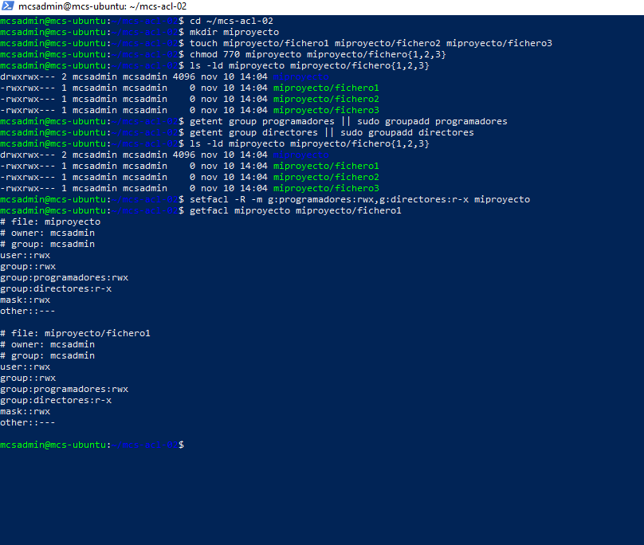
09 · Permisos individuales de jefe
id fulano
id jefe
setfacl -m u:jefe:rwx miproyecto/fichero{1,2}
setfacl -m u:jefe:--- miproyecto/fichero3
getfacl miproyecto/fichero{1,2,3}fulano pertenece a programadores y jefe a directores. La entrada individual de jefe prevalece sobre la de su grupo en los tres archivos.
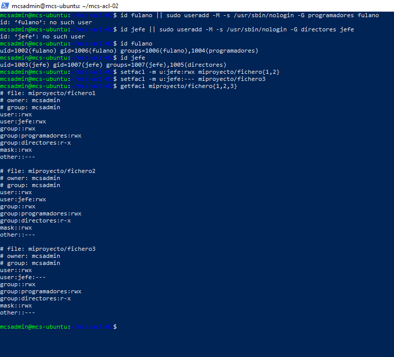
10 · Lectura y escritura reales
sudo -u fulano sh -c 'echo "Escrito por fulano" >> fichero1'
sudo -u fulano cat fichero1
sudo -u jefe sh -c 'echo "Escrito por jefe" >> fichero2'
sudo -u jefe cat fichero2
sudo -u jefe cat fichero3
sudo -u jefe sh -c 'echo "Intento de jefe" >> fichero3'Desde miproyecto, fulano lee y escribe fichero1 y jefe lee y escribe fichero2. Los intentos de lectura y escritura de jefe sobre fichero3 devuelven Permission denied.
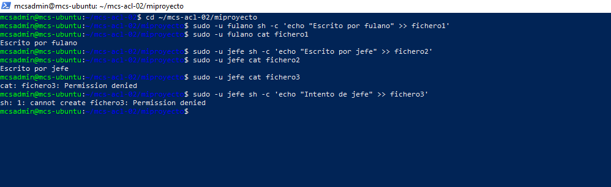
11 · Acceso antes y después para mengano
sudo -u mengano sh -c 'echo "Escrito por mengano" >> ./fichero1'
sudo -u mengano cat ./fichero1
setfacl -m u:mengano:--- .
getfacl .
sudo -u mengano cat ./fichero1Mengano pudo escribir y leer gracias a programadores. Tras asignarle --- en miproyecto, perdió el permiso de atravesarlo y la lectura falló. La comparación usa rutas relativas desde miproyecto para aislar su ACL de los permisos de carpetas superiores.
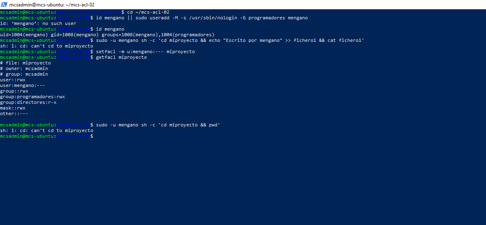
12 · Máscara final y creación de archivos
setfacl -m m::r-x .
getfacl .
sudo -u fulano touch ./creado_por_fulano.txt
sudo -u mengano touch ./creado_por_mengano.txt
sudo -u jefe touch ./creado_por_jefe.txtLos tres intentos devolvieron Permission denied. La máscara deja a fulano sin escritura en el directorio. Jefe ya tenía r-x por directores. Mengano carece de acceso por su entrada individual. Para crear un archivo se necesitan escritura y paso en el directorio.
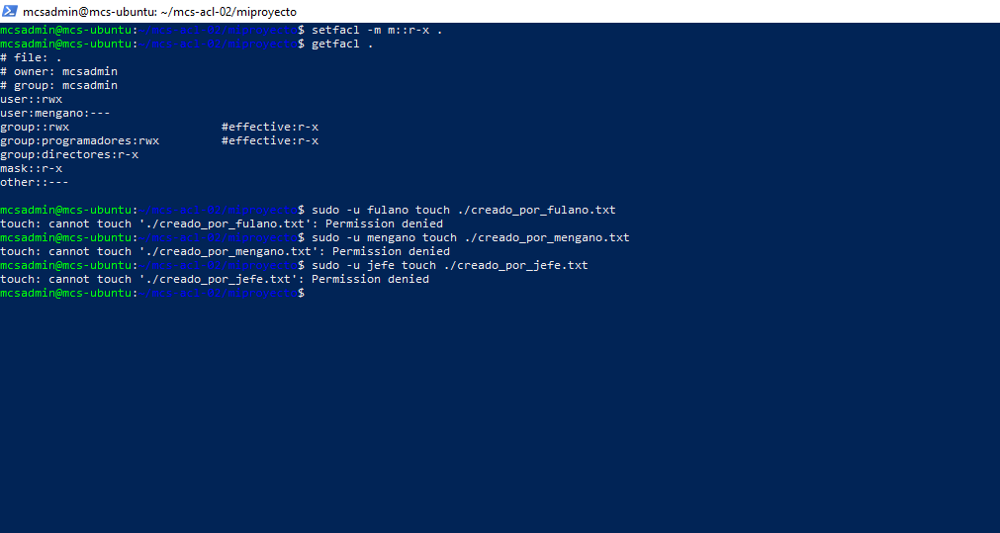
EXAM MODE
Interpretación del ejemplo del caso 1.1
En el ejemplo de dir1, el propietario conserva rwx y other::--- deja al resto sin permisos. La máscara r-x filtra las entradas del usuario nombrado alumno y de los grupos. Una entrada rwx pasa a r-x efectivo y una entrada r-x ya coincide con la máscara.
Reglas para recordar
- La ACL de acceso decide sobre el objeto. La ACL por defecto sirve de plantilla al crear objetos dentro de un directorio.
- La máscara limita al grupo propietario y a las entradas de usuarios y grupos nombrados. El propietario y otros tienen sus propias entradas.
- Una entrada de usuario nombrado se evalúa antes que sus grupos.
- En un directorio, x permite atravesarlo. Crear entradas requiere w y x.